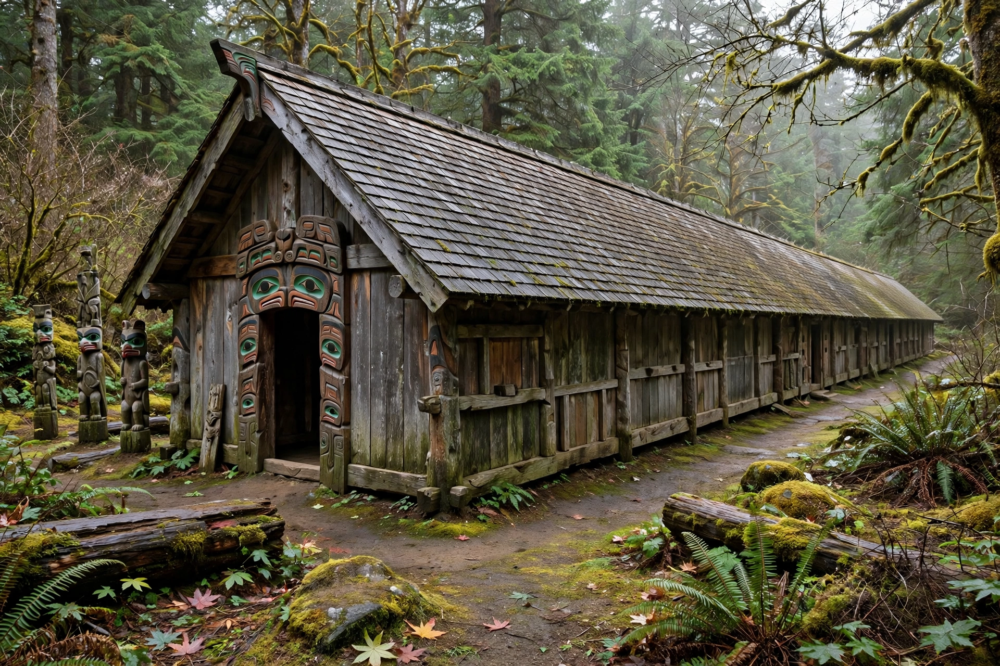

A longhouse or long house is a type of long, proportionately narrow, single- or multi-room building built by peoples in various parts of the world, including Asia, Europe and North America. Typically it housed multiple families or an extended kin group.
The earliest longhouses, associated with the Linear Pottery culture from about 5000 BC, were timber structures up to 45 metres long, housing people and sometimes livestock.
Iroquoian peoples such as the Haudenosaunee built bark-covered longhouses tens of metres long, organised by matrilineal clans, with shared central fires and bunks along the walls. The longhouse remains a powerful symbol of the Haudenosaunee Confederacy. In the Pacific Northwest, plank houses served similar communal functions.
Dayak longhouses in Borneo and Mentawai uma in Indonesia raised communal dwellings on stilts, sometimes housing hundreds of people.
Norse longhouses, such as the reconstructed chieftain's house at Lofotr in Norway, combined hall, dwelling and byre under one curved roof.